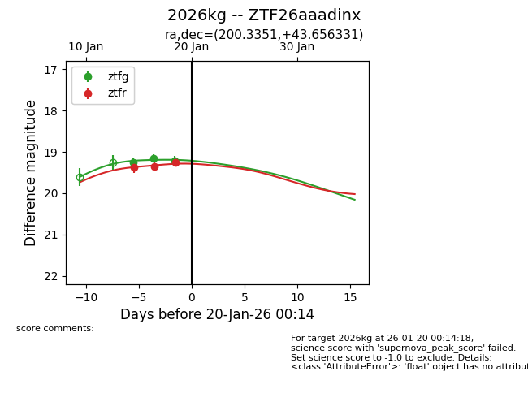
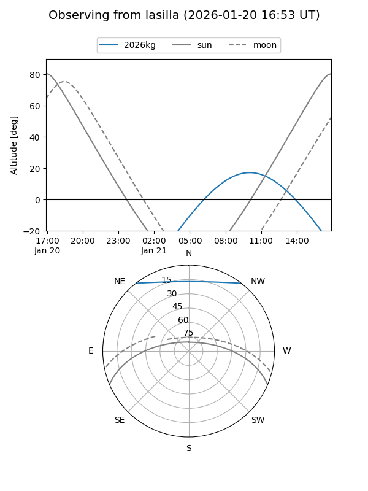
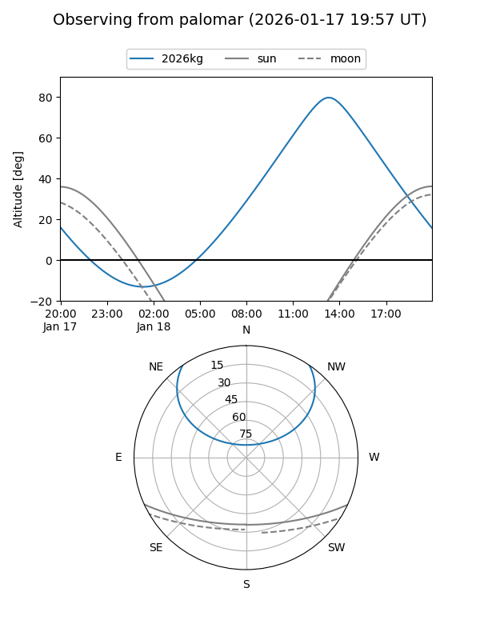
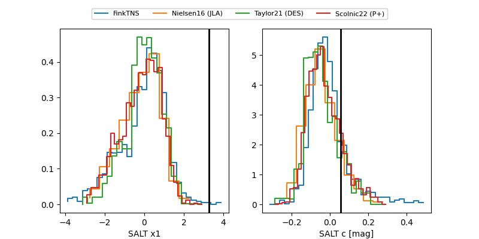

2026kg
Target 2026kg at 2026-01-26 20:01
Aliases and brokers:
FINK: link
Lasair: link
ALeRCE: link
TNS: link
YSE: link
alt names
ZTF26aaadinx (ztf,fink_ztf)
2026kg (tns,yse)
Coordinates:
equatorial (ra, dec) = 200.3351,+43.65633
equatorial (HMS+DMS) = 13:21:20.43,+43:39:22.79
galactic (l, b) = (104.7906,+72.40318)
Flags:
Photometry:
last ztfg=19.18, ztfr=19.44
4 ztfg, 5 ztfr detections
Lightcurve

Visibility


Additional plots
